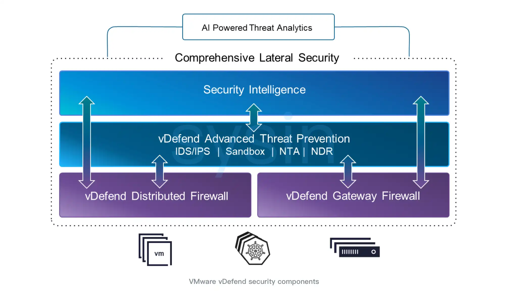
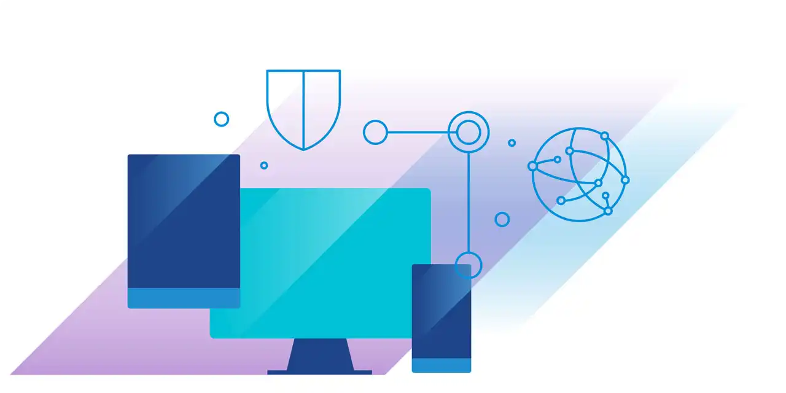
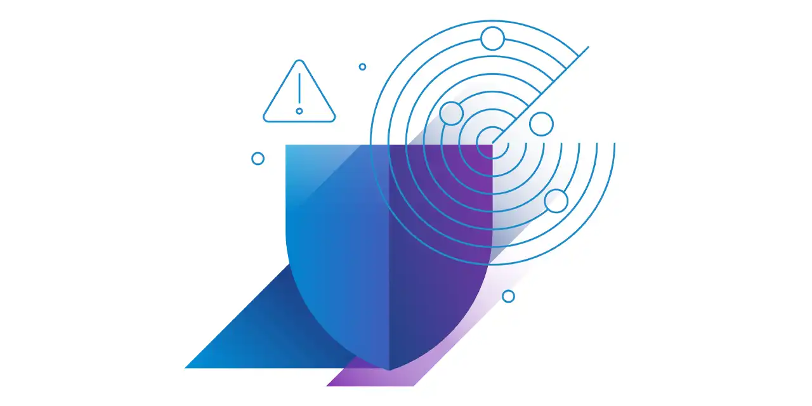

请访问原文链接：VMware vDefend 9.1 - 私有云安全解决方案 查看最新版。原创作品，严禁商业及个人盈利性网站转载。
作者主页：sysin.org
VMware vDefend
通过基于 Hypervisor 原生架构的多层防御，为所有 VMware Cloud Foundation 工作负载提供全面的零信任横向安全防护。

vDefend 基于 Hypervisor 原生架构，采用分布式软件定义模式构建闭环安全架构，能够通过可视化、防御、检测和缓解实现全面的多层安全防护。vDefend 在统一平台中集成了 vDefend Firewall、入侵检测与防御服务 (IDS/IPS)、恶意软件防护服务 (Malware Prevention Service)、网络检测与响应 (NDR)、网络流量分析 (NTA) 以及深度流量可视化功能。
vDefend 核心优势
多层防御，应对现代恶意软件、勒索软件和 AI 驱动的攻击。
利用基于 Hypervisor 原生架构的软件定义安全解决方案，应对现代 AI 驱动的网络攻击。深入了解网络和应用活动，防止未经授权的横向移动，并通过实时行为分析检测零日异常，在造成损害之前缓解威胁。

🔒 全面的零信任横向安全防护
全面了解工作负载的应用流量，并快速实现东西向流量的宏观和微观分段。自动创建具备上下文感知能力的安全策略，按照最小权限原则轻松为应用工作负载启用零信任安全防护。
🔍 高级威胁检测与防护
部署高性能分布式入侵防御系统，应对现代威胁。检查网络流量，阻止新出现的漏洞利用攻击，满足法规遵从要求，并通过虚拟补丁保护存在漏洞的工作负载。
⚡ 安全保障下的应用敏捷性
随着私有云规模的增长，以应用所需的速度扩展安全防护能力。无论应用部署或迁移到何处，都能确保其在整个生命周期内持续遵循安全策略。
🤖 VMware vDefend AI 助手
借助由生成式 AI 驱动的助手，为安全团队提供支持，加快防火墙操作、可视化复杂攻击链，并快速开展多上下文威胁调查。
vDefend 核心功能

Key Capabilities
分布式架构
通过基于 Hypervisor 原生架构的分布式、可横向扩展的第 7 层有状态防火墙，保护虚拟机和 VMware vSphere Kubernetes Service (VKS) 中的每个应用，同时消除流量绕行带来的成本和硬件防火墙的容量限制。
即插即用部署
通过与 VMware Cloud Foundation 的 Hypervisor 原生即插即用集成，轻松部署和运行横向安全防护，无需更改现有网络。
Security Intelligence
全面了解所有工作负载的活动，并获取针对性的安全策略建议。
动态策略编排
只需定义一次安全策略，即可确保工作负载在整个生命周期内自动持续遵循相应的安全策略。
入侵检测与防御系统 (IDPS)
通过 Turbo Mode IDPS 检查每台 Hypervisor 和每个工作负载上的网络流量，快速阻止恶意攻击者利用软件漏洞访问关键系统和数据。
恶意软件检测与防护
利用机器学习、静态分析、动态分析和内存分析技术，深入识别威胁，防范具有高度规避能力的零日恶意软件。基于 Hypervisor 层的客户机内省技术，可以深入查看文件系统和进程。
网络流量分析 (NTA)
通过基于行为的方法识别零日威胁。利用机器学习模型检测表明存在恶意活动的异常行为，减少误报，并在攻击链的早期阶段检测和遏制高级攻击。
多上下文网络检测与响应
自动关联来自 IDPS、恶意软件检测和 NTA (s) 的多上下文信号，生成映射到 MITRE ATT&CK 框架的高置信度攻击活动，帮助快速研判威胁活动。
AI 助手
通过统一的生成式 AI 辅助界面，帮助安全团队简化防火墙操作，同时支持 SOC 分析师关联复杂的检测信号，并调查多上下文威胁活动。
下载地址
VMware vDefend 9.1 | Build Number: 25377994
相关产品：

文章用于推荐和分享优秀的软件产品及其相关技术，所有软件提供免费版或试用版。内容若侵犯了您的版权，请联系作者删除。如果您喜欢这篇文章，或者觉得它对您有所帮助，亦或发现有不当之处；欢迎发表评论，也欢迎分享这个网站，或者赞赏一下，谢谢！提示：捐赠或赞赏属于自愿赠予行为，提交后即表示您对作者的支持与认可。为避免误操作，请在确认前仔细检查金额，支付完成后将无法撤销或退还。
 支付宝赞赏
支付宝赞赏  微信赞赏
微信赞赏赞赏一下
敬请注册！点击 “登录” - “用户注册”（已知不支持 21.cn/189.cn 邮箱）。 请勿使用联合登录（已关闭）。